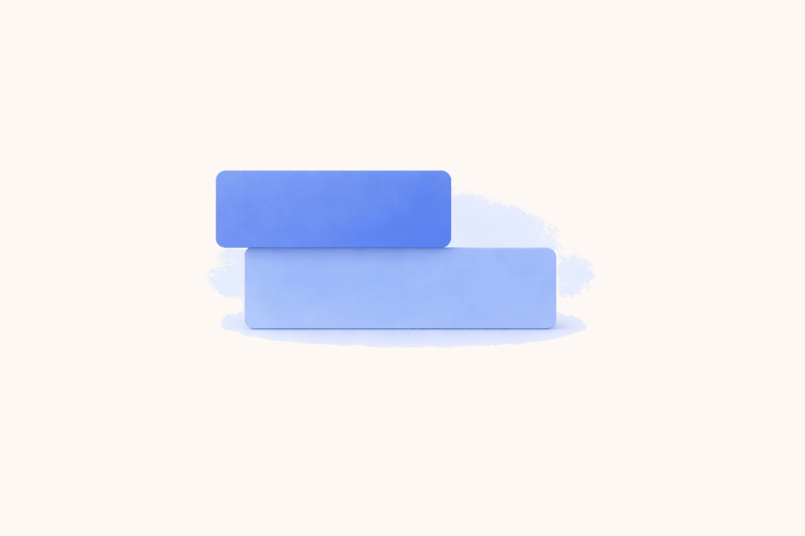
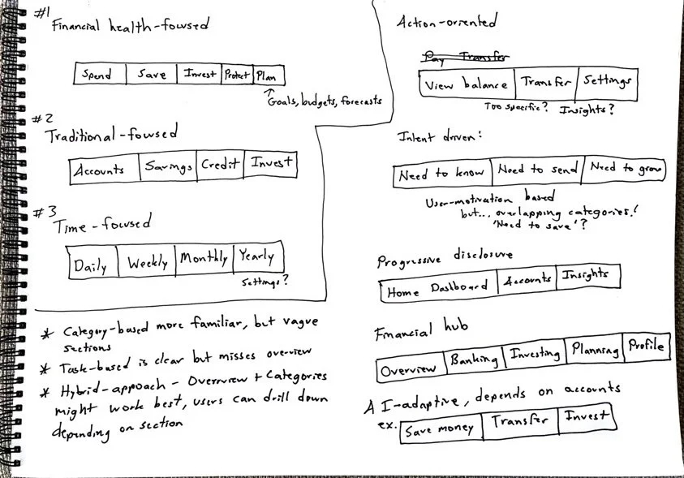

Revamping Retail Banking
Backbase | Amsterdam, the Netherlands

Goal
To design the retail banking app's dashboard and create a new information architecture to accommodate an expanding feature set, improving navigation and user experience while supporting business goals for customer satisfaction and sales growth.
Where we started
Client challenges:
- Sales: The app lacked cross-selling and upselling opportunities for banks.
- Overview: Clients wanted an overview of finances for their customers.
- Navigation: Clients lacked a cohesive navigation experience, and voiced concerns about the usability of the app; e.g. inconsistent icons and spacing.
Internal challenges:
- Poor feature integration: Product wanted to introduce new personalization capabilities and insights features, but the app's architecture couldn't accommodate them without creating navigation confusion.
- Siloed teams: Each team worked on their own specific journey and lacked collaboration with other journey teams, exposing Backbase's organizational seams.

How we got there
To address the challenges and align Backbase's digital retail app with both client and business needs, we:
- Facilitated alignment between product and engineering teams on feature integration priorities and collaboration.
- Analyzed sales data with product to set clear goals and identify key markets.
- Attended quarterly business reviews to understand communication and get buy-in.
- Conducted interviews with clients and client customers.

Presenting findings to engineering directors
Redefining the IA
Content Audit:
- Catalogued every feature, screen, and function in the existing app
- Analyzed how features were currently categorized and accessed
Card Sorting and Tree testing exercises:
- Asked users (both bank customers and internal stakeholders) to group related banking features into categories that made sense to them
- Identified natural mental models for how people expect banking functions to be organized
- Discovered gaps between current app structure and user expectations
User Journey Mapping:
- Traced common banking tasks (checking balances, transferring money, paying bills) through the existing app
- Identified pain points where users got confused or lost
- Documented where the current IA created friction or dead ends
Competitive review:
- Examined how best-in-class apps organize complex financial feature sets without overwhelming users
- Identified 'best practice' navigation patterns
- Benchmarked against apps that had solved similar dashboard and information architecture challenges

Competitive review: dashboard layouts
Discovery
We began by asking:
- What do consumers expect to see when they first open the app?
- How do users organize and prioritize their interactions with retail banking features?
Here's what I did:
- Deep-dive interviews: Conducted interviews to understand better how people interacted with their retail mobile banking app.
- Sketched potential solutions, shared with PM and engineers.
- 2 rounds of concept testing: Conducted concept testing with client customers throughout the design process, and iterated on the design based on the feedback.

Navigation brainstorm
Concept testing
Two concepts we tested, using the same content
Concept 1: Category-based organization (mental model: "I want to check my account balance.")

Concept 2: Task-based organization (mental model: "How much can I spend this month?")

We moved forward with a combination of Concept 1 and Concept 2, as they best balanced user needs and business constraints:
- Familiar categorization (Concept 1): Users still relied on traditional banking categories when managing specific accounts, e.g. to see total account balance first
- Financial task focus (Concept 2): Users wanted immediate answers to questions like spending and financial goals
- Hybrid approach (Concept 1 + 2): The final design needed to serve both user mental models within a scalable navigation framework
🌪️ Plot twist: Where's the 'More' button!?
Our goal with the new information architecture was to eliminate vague sections, like the "More" tab that had become an easy-to-implement catch-all dumping ground.
However, our research had a blind spot: several clients still insisted on keeping the "More" tab in the bottom navigation, fearing that users wouldn't be able to find essential functions like settings and logout without it.
So, we developed a hybrid approach: we kept the "More" tab to address client concerns, but established a roadmap to phase it out over time.
Evolution of the More section
More as a features catch-all
More in tab bar
More in Profile section

Impact
- Successfully launched a new Retail app experience, receiving positive client feedback for its clean, intuitive structure. 76% of Retail clients favored the revamped Retail app experience over the old one.
- Fostered enhanced cross-functional collaboration between Retail and Business departments, leading to smoother development and faster decision-making.
- Initiated a new research repository project to centralize and organize all gathered insights, driving continuous improvement and alignment across teams.
- This project not only transformed the retail banking experience but also set new standards for cross-team collaboration and user-centered design at Backbase. Looking forward, I aim to continue leading projects that fuse creativity with insights to drive impactful user experiences.
Final screens
Dashboard
Home
Insights
Cards
Help

Move Money
Transfer
Scheduled
History
Contacts

Accounts
Account list
Pockets
Statements